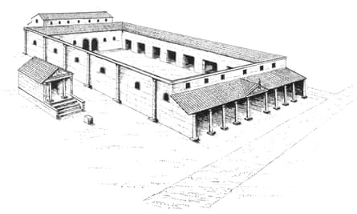
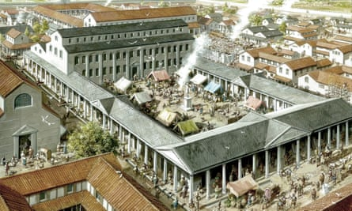

The remains of London’s earliest Roman basilica have been discovered under an office block, in what archaeologists have described as one of the most significant recent discoveries in the capital.
The almost 2,000-year-old structure was part of the forum, the Roman capital’s social and administrative centre, and built around the late 70s or early 80s AD, just a few decades after the Romans invaded Britain and 20 years after Boudicca sacked and burned the city in AD60.
Situated on a high point in the city on a raised platform, the forum was a large open space about the size of a football pitch, lined with shops and other buildings. The basilica, at its heart, functioned as a kind of town hall, in which important political and judicial decisions were made.
An illustration of the first London forum, the Roman capital’s social and administrative hub.Illustration: Peter Marsden
Intriguingly, archaeologists believe the excavated section contains the tribunal, a designated part of the basilica where important officials would have sat on a raised stage to adjudicate on the main issues affecting the capital of the new Roman outpost.
The structure was short-lived, however, being replaced in about AD100 by a much bigger forum built on the same site.
Describing the find as “one of the most significant discoveries made in the city in recent years”, Sophie Jackson, the director of development at Mola, the Museum of London Archaeology , said: “It’s like discovering the speaker’s chair and chamber of the House of Commons, 2,000 years into the future. The levels of preservation of the basilica have far exceeded our expectations, and we have possibly the most important part of the building.
Artist’s impression of a forum previously unearthed in Leicester.Photograph: Mike Codd/Leicester Museums and Galleries
“Excitingly, we’ve only just scratched the surface of this site’s potential through our initial investigations.”
The remains were discovered in 2023 as part of the redevelopment of an office building at 85 Gracechurch Street, next to the entrance to the historic Leadenhall market at the heart of the City of London.
Archaeologists have long known of the location of the forum but were surprised to find extensive foundations and walls made of flint, ragstone and Roman tile, in some areas extending more than 10 metres long, 1 metre wide and 4 metres deep.
The scale of the remains led the site’s developers, Hertshten Properties, to revise its plans to include a public exhibition and event space, for which it intends to submit a revised planning application.
Duncan Wilson, the chief executive of Historic England , said: “To find the dais of the basilica, the heart of London’s Roman forum, surviving beneath today’s bustling square mile is really something special. To capitalise on this extraordinary discovery we have helped shape a new public display of the archaeological remains, offering a brand new visitor experience in the City.”